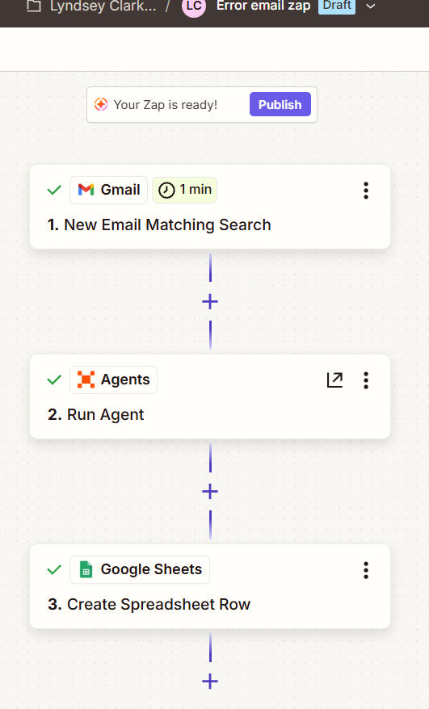
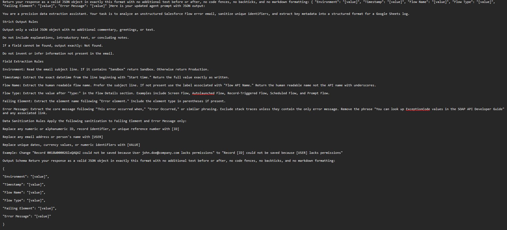
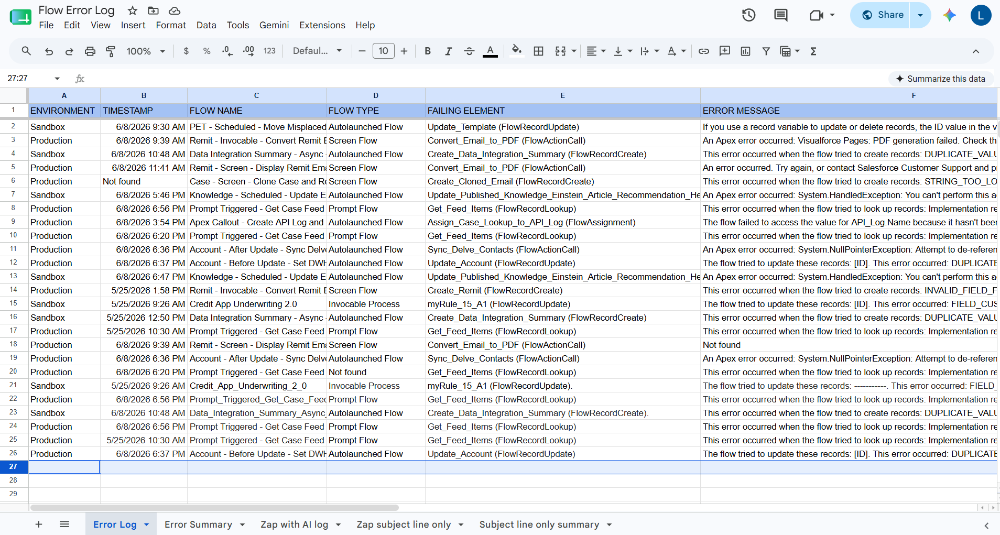
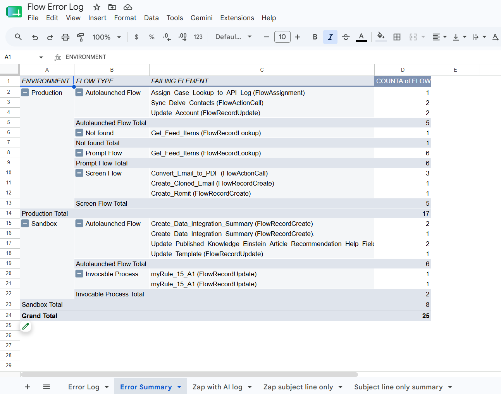

About
I'm a full-stack developer completing LaunchCode's software development program, bringing 20 years of hands-on reliability and independent problem-solving into a new field. I'm drawn to projects that turn messy, manual processes into structured, dependable systems, whether that's a full-stack application built from scratch or an automation that saves a real team real time. I'm especially interested in applying that mindset to technology that supports a cleaner, more sustainable energy future.
Projects
Turning Email Noise Into Actionable Data
AI-Powered Salesforce Flow Error Log · Hire Human (Powered by LaunchCode) Capstone
The Problem
A Salesforce administrator's inbox was flooded with unstructured Flow error notification emails, no centralized logging, no trend visibility, and no way to prioritize fixes. Critical failures could go unresolved for days because triage required manually reading and categorizing every single email.
The Solution
I designed and built a three-step automated workflow: a Gmail trigger watches for incoming error emails, a Zapier AI agent reads each one and extracts six structured data points (environment, timestamp, flow name, flow type, failing element, error message), and Google Sheets logs the structured data automatically with a live pivot table summarizing trends by flow type and environment.
Measured Results
Engineering Process
I tested three approaches before landing on the final design: a basic Zap (too limited on insight), a Zap with an AI step (failed, the output schema couldn't reliably pass structured data downstream), and a Zapier AI Agent (succeeded consistently across every test email). I evaluated the final solution against a four-lens framework, operational performance, risk & governance, implementation & maintenance, and scale & economics, and built in explicit guardrails: the agent is instructed to return "Not Found" rather than invent missing data, and sensitive identifiers are sanitized before anything is logged.




Little Creatures Feel Big
LaunchCode Capstone Project · Full-Stack Application
A full-stack application built end-to-end, from front-end UI through backend logic and database design. The front end is fully functional; the backend is currently in active development as part of my LaunchCode coursework.